CAPÍTULO 1 - Frações algébricas
Uma empresa doará brinquedos a várias instituições que cuidam de crianças em situação de vulnerabilidade social. Cada instituição deverá receber 500 brinquedos.
Troque ideias com um colega e escrevam, no caderno, uma expressão algébrica que representa a quantidade de brinquedos que cada criança receberá, sabendo que x é o número de crianças em cada uma dessas instituições.
A expressão que vocês escreveram para representar a quantidade de brinquedos que cada criança receberá chama-se fração algébrica.
121
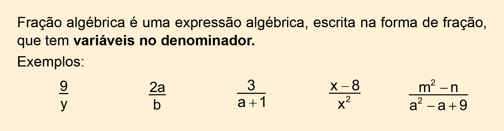
Veja alguns exemplos de expressões algébricas que não são frações algébricas.
|
|
|
Em uma fração algébrica, o denominador deve ser diferente de zero, pois não existe divisão por zero. Por isso, as variáveis só podem assumir valores que não o anulem.
Assim:
Em 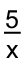, x pode ser qualquer número real com
exceção do zero. Logo, para que esta fração exista devemos ter x ≠ 0;Em 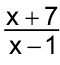, para que a fração exista devemos ter x - 1 ≠ 0, ou seja, x ≠ 1.
Simplificação de frações algébricas
Para simplificar uma fração algébrica, precisamos encontrar, na sua forma mais simples, uma fração equivalente a ela. Essa simplificação é obtida cancelando-se os fatores comuns do numerador com os do denominador. Em alguns casos, é necessário usar a fatoração de polinômios.
Vejamos alguns exemplos de simplificação:
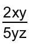
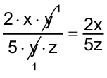
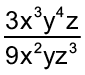
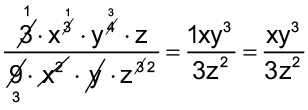
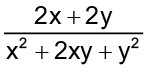
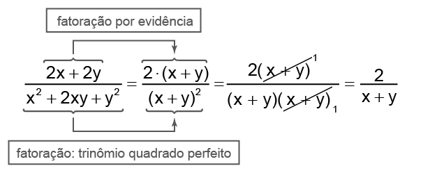
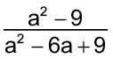
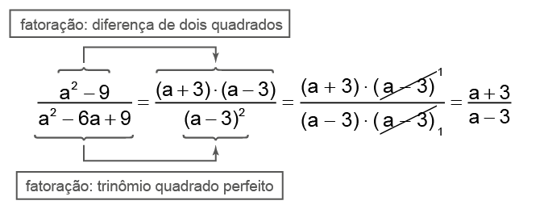
Frações algébricas
É importante ressaltar que o numerador pode ou não apresentar variáveis.
Reinaldo Rosa/Acervo da Editora
122
Encontre soluções
Escreva, em seu caderno, o valor que a variável x não pode assumir para que as frações a seguir existam.
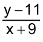
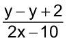
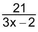
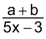
Num concurso público, há 150 candidatos para um número x de vagas.
Qual fração algébrica representa o cálculo do número de candidatos por vaga?
Se ocorresse um aumento de 15 vagas, qual fração algébrica representaria o número de candidatos por vaga?
A distância entre as cidades de Belo Horizonte e Cuiabá é de 1 594 km. Um caminhão leva x horas para percorrer essa distância, ao passo que um automóvel leva 5 horas a menos para percorrer o mesmo trajeto. Sabendo que velocidade média é a razão entre a distância percorrida e o tempo gasto para percorrê-la, responda:
Qual expressão algébrica representa a velocidade média do caminhão?
Qual expressão algébrica representa a velocidade média do automóvel?
123
Em seu caderno, simplifique as frações a seguir:
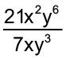
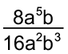
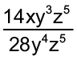
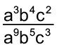
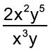
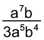
Simplifique, em seu caderno, as seguintes frações algébricas:
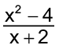
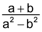
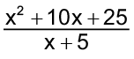
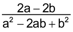
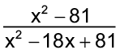
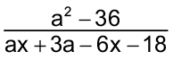
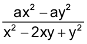
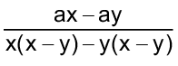
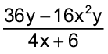
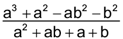
No caderno, simplifique as expressões algébricas e depois calcule o valor numérico de cada uma delas.
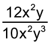, para, 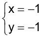.
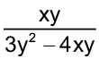, para, 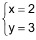.
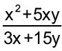, para, 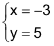.
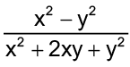, para, 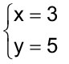.
Resolva, no caderno, as operações indicadas no numerador e simplifique a fração quando possível.
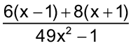
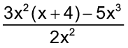
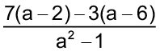
(FAAP-SP) Simplificando a expressão algébrica , obtemos:
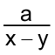
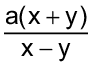
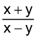
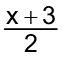
Simplificando a expressão algébrica 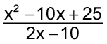, obtemos:
Reinaldo Rosa/Acervo da Editora